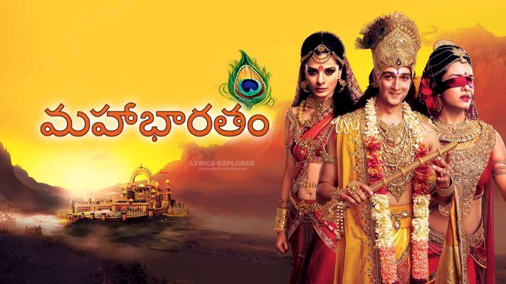

.jpg)

Mahabharat is a 2013 Indian epic mythological television series based on the Sanskrit epic Mahabharata.[3] It aired from 16 September 2013 to 16 August 2014 on Star Plus.[4][5] The series is available digitally on Disney+ Hotstar. Produced by Swastik Productions Pvt. Ltd, it starred Saurabh Raj Jain, Pooja Sharma, Shaheer Sheikh and Aham Sharma
The Mahabharata manuscripts exist in numerous versions, wherein the specifics and details of major characters and episodes vary, often significantly. Except for the sections containing the Bhagavad Gita which is remarkably consistent between the numerous manuscripts, the rest of the epic exists in many versions.[1] The differences between the Northern and Southern recensions are particularly significant, with the Southern manuscripts more profuse and longer.[2] The manuscripts found in the North and South India have "great divergence" in details, though the thematic essence is similar.[3] Scholars have attempted to construct a critical edition, relying mostly on a study of the Bombay edition, the Poona edition, the Calcutta edition and the south Indian editions of the Mahabharata manuscripts. The most accepted version is one prepared by scholars led by Vishnu Sukthankar at the Bhandarkar Oriental Research Institute, preserved at the Kyoto University, the Cambridge University and various Indian universities.